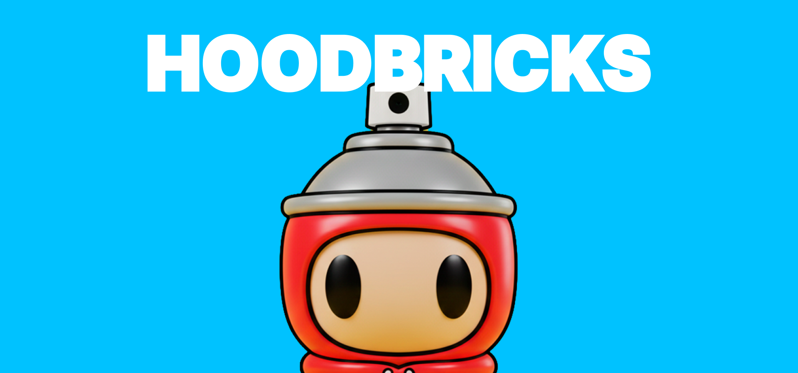
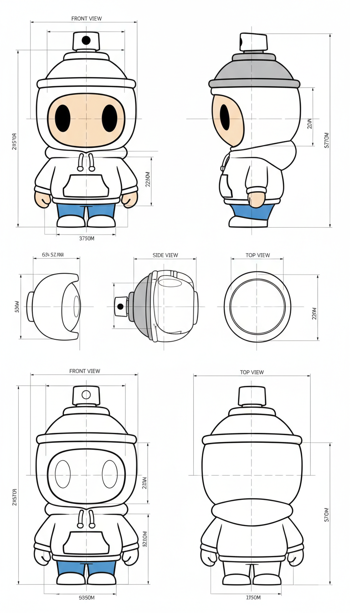
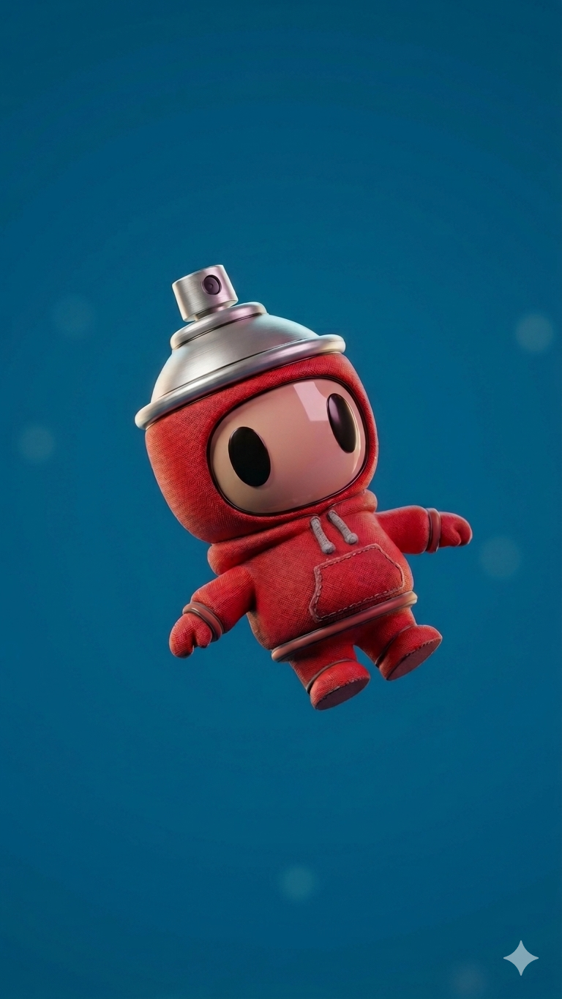

HOODBRICKS
2025A Studio concept about autoral 3D Printed Shoes

The collectibles market and streetwear culture operate under a logic of identity and rapid trend cycles. However, the development of physical products in this category often faces limitations in conventional manufacturing, hindering agility and fidelity to the complex details present in urban apparel. While collaborating with NUBO 3D, I identified that the main point of friction between creative conception and small-batch production is the rigidity and high cost of molds for plastic injection.
For the blind box model, which requires high differentiation and variations in accessories, the investment in fixed molds often makes collection diversity unfeasible and delays market response. As a solution to this gap, I developed the HOODBRICKS collection at the invitation of NUBO 3D, using a design approach natively conceived for digital fabrication.
The technical differentiator of this project lies in the application of Design for Additive Manufacturing (DfAM). When designing specifically for NUBO 3D technology, we explored geometries and textures that simulate synthetic materials with a precision that traditional processes would struggle to achieve without high tooling costs. This modular design structure allows for the creation of variations and unique pieces with greater flexibility, reducing production costs and enabling more dynamic scaling.
Product design, combined with additive manufacturing, becomes a technically viable tool for niche projects. This exercise demonstrates how digital fabrication can integrate form and function to efficiently materialize cultural identities. I also believe that the design model can be interesting for making it increasingly personalized and easily modified, facilitating not only small changes but also the personalization of each small character.
PROBLEMATIC AND DIFFERENTIATING
The shoe is based on the idea that human feet are extremely diverse, but the industry has historically produced standardized, rigid, and poorly adaptable footwear. The project proposes to reverse this logic by using 3D printing and nature-inspired structures to create a more organic, responsive, and personalized system.
The goal is not just to "print a shoe," but to develop a structure that behaves similarly to biological systems: adapting pressure, absorbing impact, and distributing effort according to body movement.
SKETCHING

PROTOTYPING


.jpg)
CREDITS
Fotografia: Sofia Arnaud
3D Artist: Nubo 3D
Printer: A1 Bambu Lab